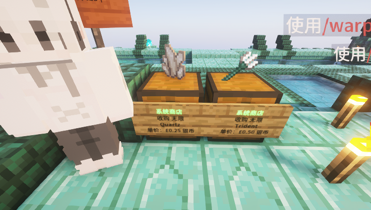
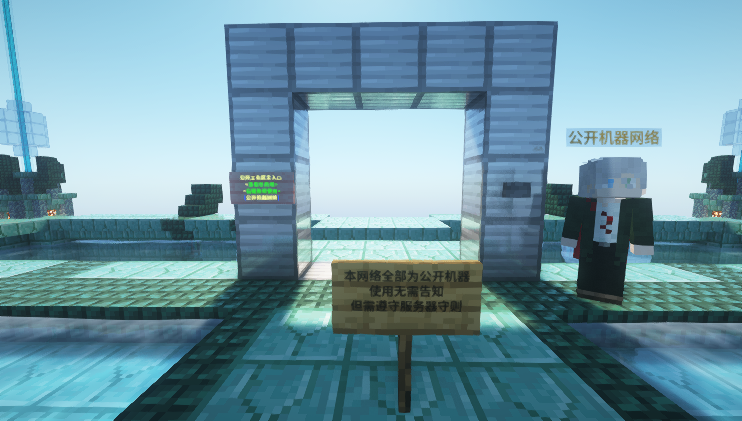

Loading header...
如何获取资源
这篇文章将会从零开始帮助你获取资源。
BiliCraft和多数服务器不同，其生存和资源获取分为多个世界，所以在Raphael服务器破坏性获得资源是不可取的，推荐的做法是去工厂服务器获取资源。
请不要在主世界挖矿和伐木，这会导致地形破坏，并可能导致大量的树木浮空。
工厂服务器
在工厂服务器，你主要可以获取建筑材料和生存材料。
工厂服务器是和Raphael配套的服务器，通过将生电机器集中到这个服务器来避免对Raphael造成卡顿，同时配套的资源服务器允许玩家肆意开采。
通过输入指令/server factory进入工厂服务器，/server raphael回到主服务器。
认识工厂
第一次进入工厂，你将位于工厂出生点。
初次进入工厂，你有可能出生在奇怪的位置，使用/spawn指令以回到真正的出生点。

出生在了尴尬的位置，这里偏离了工厂出生点
出生点旁有每日收购物品，每日收购128个石英和三叉戟，可以换取游戏货币。石英每个收购价0.25,三叉戟每个0.5（不得不说，这真的很亏），收取5%的税。

每日收购的物品
使用公开机器
出生点旁边有两个星门，其中粉色告示牌的是公开机器网络，从出生点进入公开机器网络传送免费。
公开机器网络内的机器全部都是免费公开使用的，使用前无需告知，只需要遵循服务器守则。

公开机器网络的星门
工厂网络通往各玩家的机器，这些机器不一定是公开的。非公开机器网络的机器需要制造者明确声明才能算是公开机器，公开机器通常有一个告示牌表示自己公开。
一些玩家希望推广公开/私有机器标识贴纸。
机器出现故障时，请及时在群内或者其他地方报告维修。
很多机器不抗卸载，对于此类机器，请记得在服务器重启前（每日2:40左右）关闭机器。对于不会挂机的机器，请询问他人或查阅本wiki以获取帮助。
使用私有机器
私有机器并非不能使用，但使用前需要征得机器所有者的同意（你最好有保留证据）。一些机器所有者可能会采用租借的方式赋予其他玩家临时使用权。
请小心使用，一些私有机器不公开的原因正是它们太容易损坏了！
获得银币
银币是BiliCraft内重要的物资交换道具之一，其主要的获取途径有以下来源：
- 每日登录
- 每日卖酒
- 每日卖鱼
目录